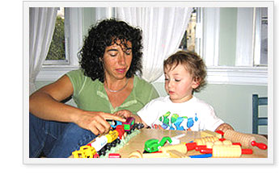

Kindergarten Readiness Services

|

Pediatric Occupational Therapist, Melisa Kaye, founded the Firefly Center 10 years ago. The Center is located in Downtown San Mateo, CA, and is easily accessed by clients from both the Peninsula and San Francisco areas. Services at the Center are provided by licensed, highly experienced and talented OTs, who pride themselves on the quality and effectiveness of their work with children. Director Melisa Kaye has been an Occupational Therapist (OT) for over 15 years. Melisa has worked with children with a wide variety of challenges in home, school, clinic and community settings. In addition to her work with children, Melisa is an instructor of Occupational Therapy at Dominican University of California and San Jose State University. She has lectured locally and nationally on OT, Sensory Integration, and developmentally related topics. She is the co-author of a book on kindergarten readiness. Melisa’s work has included OT consultation to a network of 8 child development centers in San Francisco, and management of OT services for several local school districts.
Melisa’s education includes Bachelor and Post Professional Master of Science degrees in Occupational Therapy from San Jose State University. She also received a Certificate in Early Childhood Education for Infants and Preschoolers with Disabilities. Melisa is currently pursuing a doctoral degree in Education from the University of San Francisco. Melisa's professional training includes:
|
|||